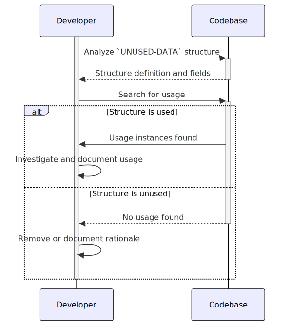

Gerado em: 1º de outubro de 2024
Título do Documento: Especificação da Estrutura UNUSED-DATA
Descrição Resumida:
Este documento descreve uma estrutura de dados COBOL chamada UNUSED-DATA encontrada no arquivo UNUSED1Y.cpy. A estrutura parece definir campos para armazenar informações relacionadas ao usuário, mas seu nome sugere que pode não ser utilizada na aplicação real.
Histórias do Usuário: Como desenvolvedor revisando a base de código, preciso entender o propósito de todas as estruturas de dados, incluindo aquelas potencialmente não utilizadas, para garantir a manutenção do código e identificar quaisquer resquícios de versões anteriores.
Épico Relacionado: 9 - Utilitários do Sistema
Requisitos Técnicos:
Definição da Estrutura de Dados:
01, significando o início de uma nova estrutura de registro chamada UNUSED-DATA.05, representando itens de dados subordinados dentro da estrutura UNUSED-DATA.Definições de Campo:
UNUSED-ID PIC X(08): Define um campo chamado UNUSED-ID para armazenar 8 caracteres de dados alfanuméricos (PIC X). Este campo provavelmente representa um número de identificação.UNUSED-FNAME PIC X(20): Define um campo chamado UNUSED-FNAME para armazenar 20 caracteres de dados alfanuméricos. Este campo provavelmente representa um primeiro nome.UNUSED-LNAME PIC X(20): Define um campo chamado UNUSED-LNAME para armazenar 20 caracteres de dados alfanuméricos. Este campo provavelmente representa um sobrenome.UNUSED-PWD PIC X(08): Define um campo chamado UNUSED-PWD para armazenar 8 caracteres de dados alfanuméricos. Este campo provavelmente representa uma senha.UNUSED-TYPE PIC X(01): Define um campo chamado UNUSED-TYPE para armazenar um único caractere alfanumérico. Este campo provavelmente representa um código de tipo ou indicador de categoria.UNUSED-FILLER PIC X(23): Define um campo de preenchimento chamado UNUSED-FILLER para ocupar 23 bytes de armazenamento. Campos de preenchimento são frequentemente usados para fins de preenchimento ou alinhamento dentro de estruturas de dados.Observações:
UNUSED-) sugere fortemente que esta estrutura de dados, embora definida, pode não estar sendo usada ativamente no sistema atual.UNUSED-FILLER sugere capacidades potenciais de expansão para dados futuros que não foram implementados ou utilizados.Modelos Relacionados
Configurações:
Melhorias de Código:
UNUSED-DATA é realmente não utilizado. Pesquise quaisquer referências ou instâncias onde esta estrutura é populada, acessada ou manipulada.UNUSED-DATA do copybook (UNUSED1Y.cpy) para evitar confusão e manter uma base de código limpa.Melhorias de Segurança:
Diagrama Conceitual:
–Made by “Smart Engineering” (by Compass.UOL)–